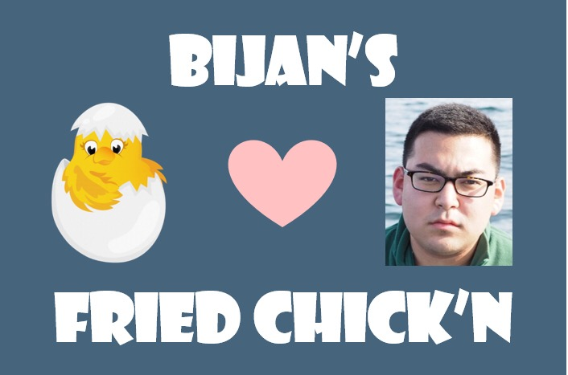
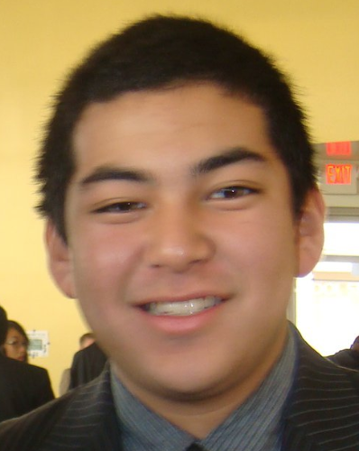

About Us
Bijan's Fried Chicken is the cleanest fried chicken joint in the city! Now with 80% less rats (and equally delicious chicken). You'll love their delightfully delightful assortment of fried products, including chicken, oreos, and cheetos. For a special treat, ask for "Richie's Special", which is literally just a gigantic bag of fried cheeto dust.
Note: do NOT ask for any cheeto-related snacks before 11PM or Bijan has had 5 tequila sunrises, whichever comes first.
Menu
Similar to Soul Food City but not Soul Food City. We're not going to just go on here and lay out the whole damn menu for you worthless peons - come in and figure it out for yourselves
Our entire food menu is available for delivery on Uber Eats, as well as "non-alcoholic" versions of Stevie's signature cocktails!
Hours
| Monday |
CLOSED |
| Tuesday |
3pm - 7pm |
| Wednesday |
CLOSED |
| Thursday |
CLOSED: Seriously if you show up on Thursday we will throw old moldy peanut shells at you until you leave |
| Friday + Saturday |
3pm Friday - 2am Sunday morning |
| Sunday |
3pm - 7pm |
Location
The restaurant is located at
Not telling!!!1!
Kidding! Actual location:
14B Chattanooga St
San Francisco, CA 94114.
Do NOT go to 14 Chattanooga St. It is located at 14B Chattanooga St.
Reviews
Check out our reviews here!
Contact Us
| Phone |
(925) 984-5654 |
| Email |
bijansfriedchicken (at) gmail.com |
| Note |
Seriously do not send us a godforsaken email people. Just come to the dang restaurant |
Meet the Crew
Bijan
 "I am a true gentleman. If you tip me a dollar I'll lay down a rap about my deathly fear of snails"
"I am a true gentleman. If you tip me a dollar I'll lay down a rap about my deathly fear of snails"
Stevie
"Bijan give me back the computer so I can write my own profile"
Richard
"I'm in it for the free nachos."
Bijiana
"Isn't that just Bijan with slightly longer hair?"
Yung Bij

Apprentice (current heir to business)
Bonus!!1! Our favorite shows and movies
We'll always have one of these playing at the restaurant to give patrons a taste of culture to go with their chicken!
Terrace House: Boys and Girls in the City
My Dear Desperado
Snail Warz
An assortment of other gangpae (i.e., kkangpae / 깡패) movies (esp. gentleman gangpae)
The Real Housewives of Potomac (when Stevie is bartending alone and/or Bijan is incapacitated)
Grey's Anatomy (only starting at 4 AM)